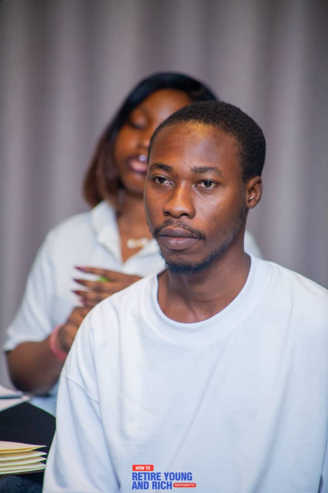
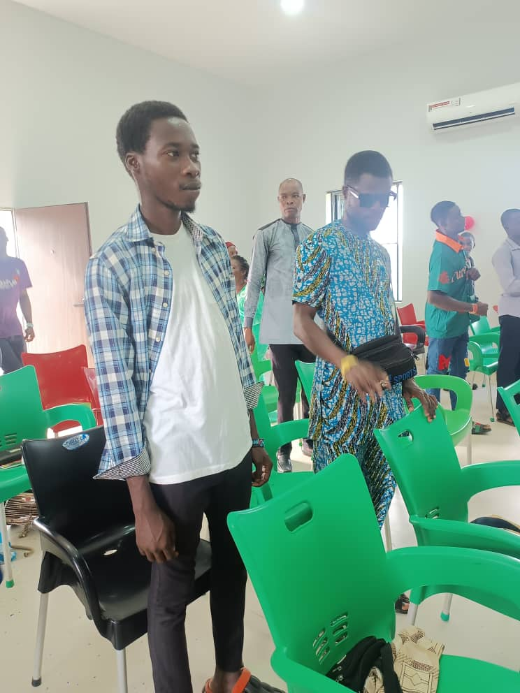

Aspiring full stack developer
Adegoke
Oladipupo Ojo.
I build responsive, thoughtful web experiences and keep growing into the full stack — one useful project at a time.
Based in Ilesa, Nigeria · Open to remote
opportunities
Curious by nature.
Always building.
A little about me
Always building.
01 / About me
A bit about me.
I’m a Computer Science graduate who enjoys turning ideas into clear, responsive interfaces.
My hands-on work spans HTML, CSS, JavaScript and React — from building component-based screens to integrating REST APIs and debugging across devices. I’ve worked on personal and collaborative projects, and I’m currently developing my backend skills with Node.js, Express and MongoDB.
I’m detail-oriented, eager to learn and open to remote opportunities where I can contribute, collaborate and keep improving.
02 / Tools & technology
My toolkit.
Tools I use today, and the skills I’m growing next.
Frontend
- HTML5
- CSS3
- JavaScript ES6+
- React.js
- JSX
- React Hooks
UI & integration
- Tailwind CSS
- Responsive design
- REST APIs
- Component-based development
- Browser DevTools
Workflow & learning
- Git
- GitHub
- VS Code
- Node.js
- Express.js
- MongoDB
Backend development and database management are active learning areas.
03 / Background
Experience & education.
Practical experience
Frontend contributor — PayLab
Collaborated with a mentor and another student on a peer-to-peer digital wallet application.
- Built React interfaces for registration, login, wallet overview, transfers and transaction history.
- Connected screens to REST API endpoints and contributed through Git and GitHub.
- Worked on responsive layouts for mobile and desktop users.
2026
National Youth Service Corps
Successfully completed NYSC.
Education
Higher National Diploma, Computer Science
Federal Polytechnic Ede · Ede, Osun State
Secondary School Education
Omoladun Comprehensive College · Ibadan, Oyo State
What’s next? Growing my backend knowledge with Node.js, Express and MongoDB.
04 / Selected work
Things I’ve built.
A mix of collaborative work and hands-on practice.
PayLab — Digital wallet
A peer-to-peer wallet frontend developed with a mentor and another student. I worked on the user flows and responsive screens for core wallet features.
- Registration, login and wallet dashboard interfaces
- Money transfers and transaction history screens
- API integration and GitHub collaboration
To-Do List Application
A task manager built in vanilla JavaScript and rebuilt with React to practise component-based development and state.
- Add, complete and delete tasks
- Local storage keeps tasks across page refreshes
- React version uses JSX and the useState hook
05 / A few moments
Outside the code.
A small collection of personal photos.


06 / Contact
Let’s build
something good.
I’m open to remote opportunities, internships and conversations about thoughtful web experiences. I’d be glad to hear from you.
Adegokeoladipupo36@gmail.comGet in touch
EmailSend me a note Phone+234 913 805 7121 GitHubgithub.com/NiestiolaLocationIlesa, Osun State, Nigeria
Download my CV